Apache Doris Colocate Join 原理与实践
作者: 康凯森
日期: 2019-01-06
分类: OLAP
- What Colocate Join
- Why Colocate Join
- How Colocate Join
- Colocate Join Performance
- How To Use Colocate Join
- 总结
Colocate Join 是我贡献给 Apache Doris 社区的第一个大 Feature，在我们生产环境已经稳定运行 3 个多月，上线效果明显。 本文总结下 Apache Doris Colocate Join 原理与实践。
What Colocate Join
我们都知道 Join 的常见连接类型分为以下几种：
- INNER JOIN
- OUTER JOIN
- CROSS JOIN
- SEMI JOIN
- ANTI JOIN
Join 的常见算法实现包含以下几种：
- Nested Loop Join
- Sort Merge Join
- Hash Join
分布式系统实现 Join 数据分布的常见策略有：
- Shuffle Join
- Broadcast Join
- Colocate/Local Join
Colocate/Local Join 就是指多个节点 Join 时没有数据移动和网络传输，每个节点只在本地进行 Join，能够本地进行 Join 的前提是相同 Join Key 的数据分布在相同的节点。
Why Colocate Join
相比 Shuffle Join 和 Broadcast Join,Colocate Join 在查询时没有数据的网络传输，性能会更高。 在 Doris 的具体实现中，Colocate Join 相比 Shuffle Join 可以拥有更高的并发粒度，也可以显著提升 Join 的性能，这一点在后面会解释。
How Colocate Join
核心思路
对于 colocate tables，在任何情况下都要保证数据的本地性。 具体包括：
- 数据导入时保证数据本地性
- 查询调度时保证数据本地性
- 数据 balance 后保证数据本地性
实现中最复杂是第 3 点: 处理 colocate tables 的 balance。
术语定义
Colocate Group
我们将一组具体相同 Colocate 属性的 Table 称为 Group，下图中 t1 和 t2 拥有相同的 Colocate Group。
Colocate Parent Table
我们将决定一个 Group 数据分布的 Table 称为 Parent Table，下图中 t1 是 Colocate Parent Table.
Colocate Child Table
我们将一个 Group 中除 Parent Table 之外的 Table 称为 Child Table，下图中 t2 是 Colocate Child Table.
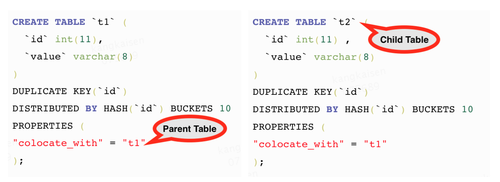
Bucket Seq
如下图，如果一个表有 N 个 Partition, 则每个 Partition 的第 M 个 bucket 的 Bucket Seq 是 M。
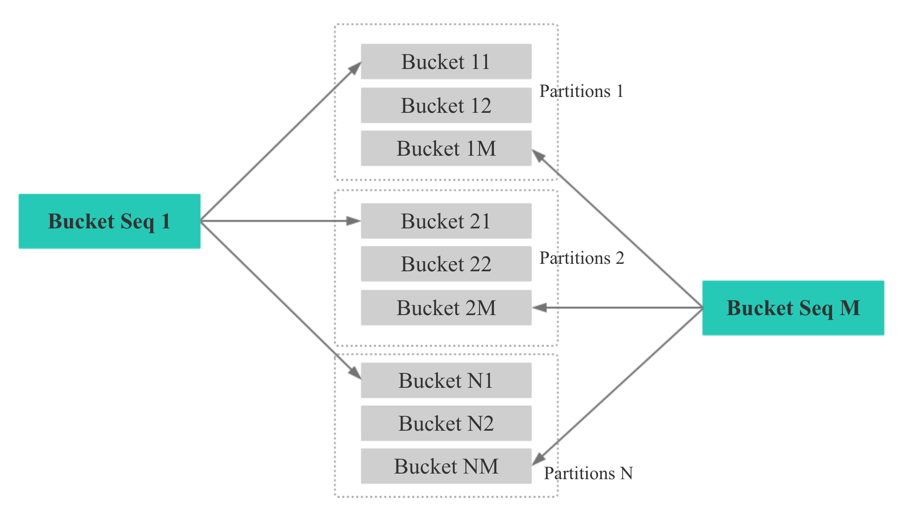
1 数据导入时保证本地性
Doris 的分区方式如下所示，先根据分区字段 Range 分区，再根据指定的 Distributed Key Hash 分桶：
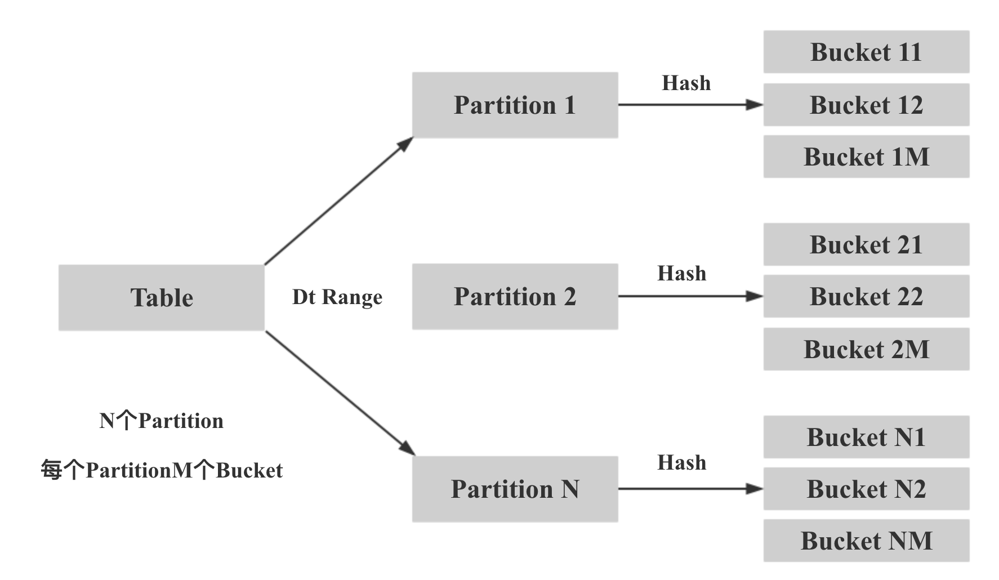
所以我们在数据导入时保证本地性的核心思想就是两次映射，对于 colocate tables，我们保证相同 Distributed Key 的数据映射到相同的 Bucket Seq，再保证相同 Bucket Seq 的 buckets 映射到相同的 BE。
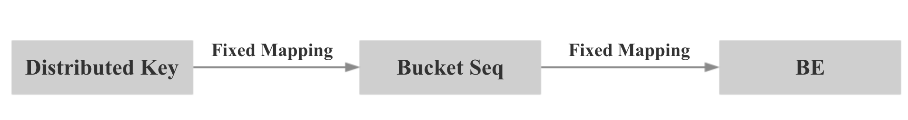
具体来说，第一步：我们计算 Distributed Key 的 hash 值，并对 bucket num 取模，保证相同 Distributed Key 的数据映射到相同的 Bucket Seq。
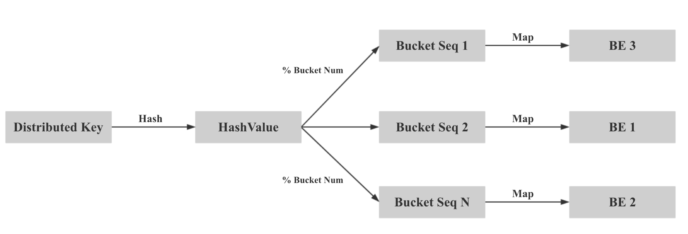
第二步：将同一个 Colocate Group 下所有相同 Bucket Seq 的 Bucket 映射到相同的 BE，方法如下：
- Group 中所有 Table 的 Bucket Seq 和 BE 节点的映射关系和 Parent Table 一致
- Parent Table 中所有 Partition 的 Bucket Seq 和 BE 节点的映射关系和第一个 Partition 一致
- Parent Table 第一个 Partition 的 Bucket Seq 和 BE 节点的映射关系利用原生的 Round Robin 算法决定
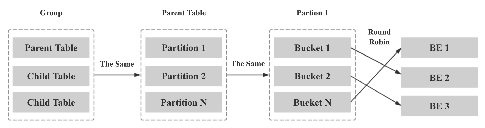
2 Colocate Join Query Plan
对 HashJoinFragment，由于 Join 的多张表有了数据本地性保证，所以可以去掉 Exchange Node，避免网络传输，将 ScanNode 直接设置为 Hash Join Node 的 Child。
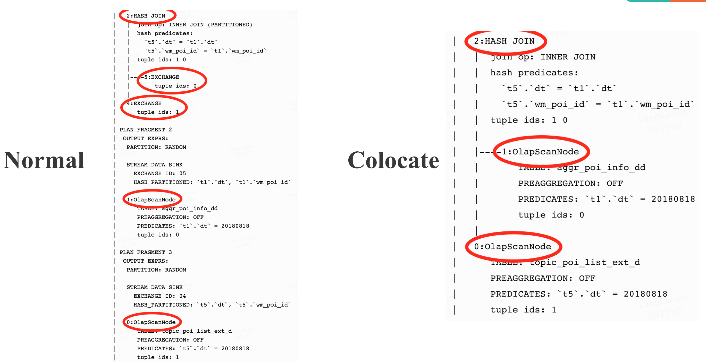
3 Colocate Join Query Schedule
查询调度的目标： 一个 Colocate join 中所有 ScanNode 中所有 Bucket Seq 相同的 Buckets 被调度到同一个 BE。
查询调度的策略：第一个 ScanNode 的 Buckets 随机选择 BE，其余的 ScanNode 和第一个 ScanNode 保持一致。
4 Colocate Join At Bucket Seq Level
目前，Doris 的 Hash Join 是 Server 粒度的：
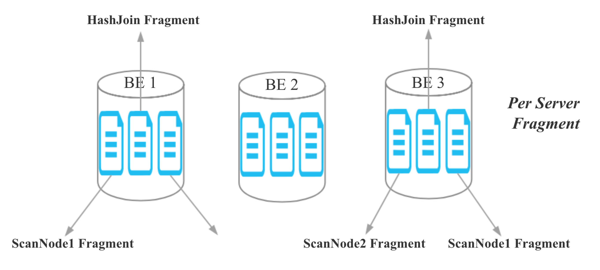
对于 colocate join，由于同一个 Colocate Group 下相同 Bucket Seq 的 Bucket 分布在相同的 BE，所以我们将 Join 的粒度从 Server 粒度降至 Bucket Seq 粒度：
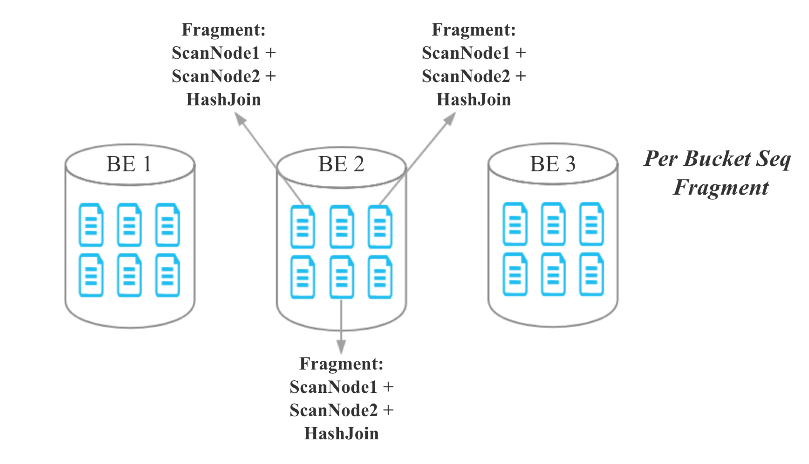
5 Colocate Join Metadata Maintenance
对于 colocate join，我们需要维护以下几个核心元数据：
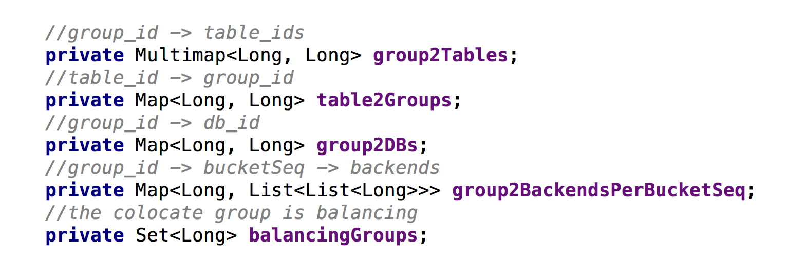
- 代码中，colocate group id 就是 colocate parent table id
- group2BackendsPerBucketSeq 代表每个 colocate group 中每个 bucket seq 映射到哪些 BE
- 为了支持 balance，以及保证元数据的一致性，这些元数据都需要持久化
6 How to decide a query can colocate join
- Join 的 tables 是 colocate able
- The colocate group 是 stable 状态，没有 balancing
- Join 的 Key 包含分桶的 Distributed Key
7 Colocate Join Support Balance
核心思路：
新增一个 daemon 线程专门处理 colocate table 的 balance，并让正常的 balance 线程不处理 colocate table 的 balance。
何时 balance：
有 BE 节点新增，删除，down 掉时。
balance 的粒度：
正常 balance 的粒度是 bucket，但是对于 colocate table，我们必须保证同一个 colocate group 下所有 bucket 的数据本地性，所以我们 balance 的单位是 colocate group。
balance 对查询的影响：
当一个 colocate group 正在 balance 时，colocate join 会退化为原始的 shuffle join 或 broadcast join。
balance 流程：
- 为需要复制或迁移的 Bucket 选择目标 BE
- 标记 colocate group 的转态为 balancing
- 对于需要复制或迁移的 Bucket，发起 Clone Job，Clone Job 会从 Bucket 的现有副本复制一个新副本目标 BE
- 更新 backendsPerBucketSeq（维护 Bucket Seq 到 BE 映射关系的元数据）
- 当一个 colocate group 下的所有 Clone Job 都完成时，标记 colocate group 的转态为 stable
- 删除冗余的副本
当有 BE 节点删除或长时间挂掉时，选择目标 BE 的策略：
和正常 balance 时的选择策略相同，考虑集群的整体负载，尽量选择负载较低的 BE。
当有 BE 节点新增时，选择目标 BE 的策略：
- 对于当前 colocate group，计算每个新增 BE 需要增加的 bucket seqs 个数：假如我们有 3 个 BE，8 个 bucket，每个 bucket 是 3 副本，则每个 BE 负责 8 个 bucket 副本，我们新增 1 个 BE 后，可以计算出每个 BE 负责的平均 bucket 副本数应该是 3 * 8 / 4 = 6，每个新增 BE 需要增加的 bucket seqs 个数为 6 / 1 = 6.
- 对于每个 bucket seqs, 随机选择从哪个旧的 BE 迁移副本到新增的 BE。
Colocate Join Performance
测试数据：
Table A,B,C 都有 10 天数据，1 天一个 partitions，每个 partition 有 570 万数据。
测试集群：
4 台低配物理机，每个 BE 24CPU，96MEM
测试 SQL:
SQL1:
select count(*)
FROM A t1
INNER JOIN [shuffle] B t5
ON ((t1.dt = t5.dt) AND (t1.id = t5.id))
INNER JOIN [shuffle] C t6
ON ((t1.dt = t6.dt) AND (t1.id = t6.id))
where t1.dt in (xxx days);
SQL2:
select t1.dt, t1.id, t1.name, t1.second_id,t1.second_name,
t5.id, t5.weight_time,t5.list,
t6.ord_id, t6._id
FROM A t1
INNER JOIN B t5
ON ((t1.dt = t5.dt) AND (t1.id = t5.id))
INNER JOIN C t6
ON ((t1.dt = t6.dt) AND (t1.id = t6.id))
where t1.dt in (xxx days)
limit 10000;
Test Result for SQL1:

Test Result for SQL2:
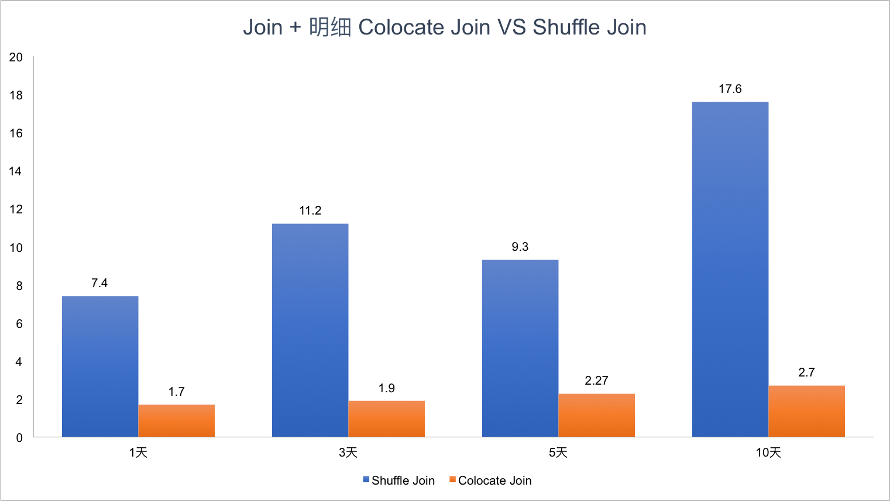
可以看到，Colocate Join 相比 Shuffle Join 有明显的性能提升，而且随着集群规模越大，Join 的数据量越多，Colocate Join 的优势会更明显。
How To Use Colocate Join
社区最新代码已经支持 Colocate Join，只不过默认是关闭的，只需要在 FE 配置中设置 disable_colocate_join 为 false，即可开启 Colocate Join 功能。
具体使用时只需要在建表时增加 colocate_with 这个属性即可，colocate_with 的值可以设置成同一组 colocate 表中的任意一个，不过需要保证 colocate_with 属性中的表要先建立。
假如需要对 table t1 和 t2 进行 Colocate Join，可以按以下语句建表：
CREATE TABLE `t1` (
`id` int(11) COMMENT "",
`value` varchar(8) COMMENT ""
) ENGINE=OLAP
DUPLICATE KEY(`id`)
DISTRIBUTED BY HASH(`id`) BUCKETS 10
PROPERTIES (
"colocate_with" = "t1"
);
CREATE TABLE `t2` (
`id` int(11) COMMENT "",
`value` varchar(8) COMMENT ""
) ENGINE=OLAP
DUPLICATE KEY(`id`)
DISTRIBUTED BY HASH(`id`) BUCKETS 10
PROPERTIES (
"colocate_with" = "t1"
);
Colocate Join 目前限制
- Colocate Table 必须是 OLAP 类型的表
- colocate_with 属性相同表的 BUCKET 数必须一样
- colocate_with 属性相同表的 副本数必须一样 （这个限制之后可能会去掉，但对用户应该没有实际影响）
- colocate_with 属性相同表的 DISTRIBUTED Columns 的数据类型必须一样
Colocate Join 适用场景
Colocate Join 十分适合几张表按照相同字段分桶，并高频根据相同字段 Join 的场景，比如电商的不少应用都按照商家 Id 分桶，并高频按照商家 Id 进行 Join。
Colocate Join FAQ
一句话总结，凡是不能进行 Colocate Join 的场景都会自动退化为原始的 Shuffle Join 或者 Broadcast Join。
Q1: 支持多张表进行 Colocate Join 吗?
A: 支持
Q2: 支持 Colocate 表和正常表 Join 吗？
A: 支持
Q3: Colocate 表支持用非分桶的 Key 进行 Join 吗？
A: 支持：不符合 Colocate Join 条件的 Join 会使用 Shuffle Join 或 Broadcast Join
Q4: 如何确定 Join 是按照 Colocate Join 执行的？
A: explain 的结果中 Hash Join 的孩子节点如果直接是 OlapScanNode， 没有 Exchange Node，就说明是 Colocate Join
Q5: 如何修改 colocate_with 属性？
A: ALTER TABLE example_db.my_table set ("colocate_with"="target_table");
Q6: 如何禁用 colocate join?
A: set disable_colocate_join = true; 就可以禁用 Colocate Join，查询时就会使用 Shuffle Join 或 Broadcast Join
总结
大多数支持 Join 的 OLAP 系统都会考虑支持 Colocate Join，比如 MemSQL, SnappyData, 阿里 AnalyticDB 等，阿里 AnalyticDB 更是在数据模型中就引入了 Table Group 的概念。总的来讲，Colocate Join 通过在数据导入，查询 Plan，查询调度，数据 balance 时对数据本地性的保证和考虑，可以显著加速特定场景的下 Join 查询，是一个十分有用的 Feature。
《OLAP 性能优化指南》欢迎 Star&共建
欢迎关注微信公众号